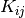
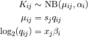
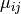
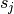
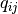
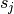
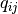

Differential expression analysis¶
In principal, all that is needed to carry out a transcript-level differential expression analysis is a count matrix where rows correspond to transcripts and columns are the samples from the experiment. There are a number of programs and possible pipelines that you can use to obtain a count matrix, but a review of the different methods is beyond the scope of this documentation. In this example we start with this count matrix and make a comparison between two unpaired groups.
The count matrix in this example was created with the following sequence of tools.
- de novo assembly using Trinity [Grabherr11]
- Read abundances estimated with Sailfish [Patro14]
Transcript level differential expression analysis¶
In this example the R package DESeq2 is used to compare two frog groups (endurant vs non-endurant) that have distinct phenotypes [Love14]. Sailfish estimates counts at the individual isoform level. It is important that the count matrix is not transformed or normalized when used as input into DESeq2.
To run the example you use:
~$ Rscript run-deseq.R raw-counts.csv
For more details on the functions used within the Rscript see the DESeq2 documentation. This will produce two files.
- A csv file with the transcript level differential expression results (deseq.csv)
- A csv file with counts that have been transformed with a regularized logarithm (deseq-samples.csv)
The second file was created using the function rlog provided with DESeq2. From the manual, we see that the function transforms the count data to the log2 scale “in a way that in a way which minimizes differences between samples for rows with small counts, and which normalizes with respect to library size”. DESeq2 does this by fitting a model. To estimate differential expression (first file) let  be the count for transcript  and sample
and sample  . DESeq2 uses a GLM to models these counts with a negative binomial distribution.
. DESeq2 uses a GLM to models these counts with a negative binomial distribution.

where  is the fitted mean and  is the gene specific dispersion parameter. The fitted mean is composed of a sample specific size factor () and  which corresponds to the “expected true concentration of fragments for sample j. The coefficients
is the gene specific dispersion parameter. The fitted mean is composed of a sample specific size factor () and  which corresponds to the “expected true concentration of fragments for sample j. The coefficients  give the log2 fold changes for gene for each column of the GLM model matrix
give the log2 fold changes for gene for each column of the GLM model matrix  .
.
Creating a Heatmap¶
The code in this section is available as a script.
Load these two files into Python.
>>> from htsint.tools import read_matrix,read_de_results,Heatmap >>> deseqIds, deseqColumns, deseqMat = read_de_results('deseq.csv',tool='DESeq') >>> dfeIds,dfeColumns,dfeMat = read_matrix('deseq_samples.csv',mtype='float') >>> padjInd = np.where(deseqColumns == 'padj')[0]
Filter out NA values
>>> import numpy as np >>> padjInd = np.where(deseqColumns == 'padj')[0] >>> size1 = deseqIds.shape[0] >>> filter1 = np.where(~np.isnan(deseqMat[:,padjInd]))[0] >>> deseqIds = deseqIds[filter1] >>> deseqMat = deseqMat[filter1,:] >>> mask = np.in1d(dfeIds,deseqIds) >>> dfeIds = dfeIds[mask] >>> dfeMat = dfeMat[mask,:] >>> print("... %s/%s transcripts pass nan filter"%(filter1.size,size1))
Filter for only the most significant transcripts (max 50)
>>> threshold = 0.5 >>> size2 = deseqIds.shape[0] >>> filter2 = np.where(deseqMat[:,padjInd] <= threshold)[0][:50] >>> deseqIds = deseqIds[filter2] >>> deseqMat = deseqMat[filter2,:] >>> mask = np.in1d(dfeIds,deseqIds) >>> dfeIds = dfeIds[mask] >>> dfeMat = dfeMat[mask,:]
Draw a heatmap of transformed count data
>>> rowLabels = dfeIds >>> colLabels = dfeColumns >>> hm = Heatmap(dfeMat,rowLabels,colLabels) >>> hm.draw_heatmap(cmap='uy',clabels=True,rlabels=True,rowFont=6) >>> hm.save("heatmap_demo.png",dpi=200)
{kind=link}
Note
The rowLabels can be changed for more meaningful labels by using BLAST and BlastMapper